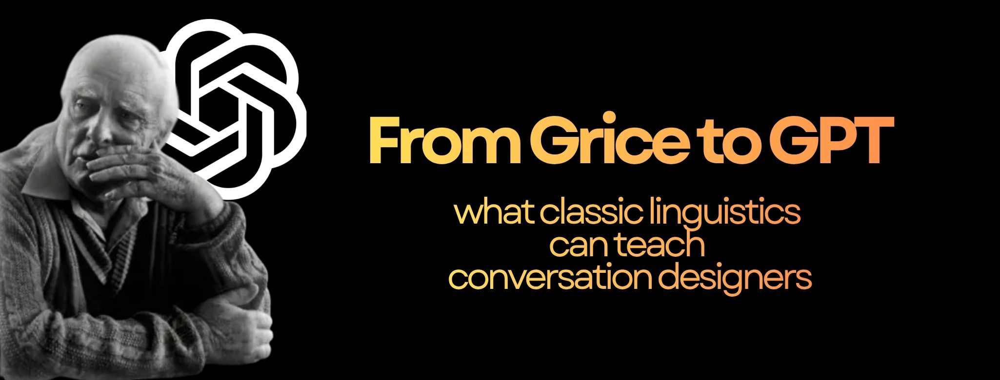

Have you ever noticed how even the best chatbots sometimes sound off? Not because their grammar’s wrong, but because something about the conversation just doesn’t feel natural.
It turns out that long before GPT and LLMs, linguists were already thinking about what makes communication flow (what keeps a dialogue cooperative, relevant, and satisfying). One of them, Paul Grice, offered a framework in the 1970s that remains surprisingly useful for anyone designing conversations today, whether with humans or with machines.
Quantity – Be as informative as needed; don’t say too little or too much.
Quality – Be truthful; don’t say what you believe to be false.
Relation – Be relevant; stick to the topic.
Manner – Be clear, brief, and orderly.
These sound simple, but they’re doing a lot of heavy lifting in our everyday talk. When someone asks, “Can you tell me the time?” and you reply “Yes,” you’re technically answering, but you’ve broken the social contract. You’re not giving the right kind of answer. That small breakdown illustrates exactly what happens when an AI assistant replies in a way that’s grammatically correct but pragmatically strange.
Conversation designers, whether they realize it or not, spend a lot of time managing Grice’s maxims.
Quantity → Information balance. A good chatbot knows how much to say. If it says too little, the user can feel dismissed. If it says too much, the user can feel overwhelmed. “Your order has shipped and will arrive on Tuesday” is better than “Your order, placed on April 3rd, has been processed and is now en route via our logistics partner...”
Quality → Trust and transparency. Users can sense when a system overpromises. It’s better for an assistant to say, “I don’t have real-time data for that,” than to bluff an answer. Honesty builds confidence.
Relation → Context and relevance. Relevance is the backbone of natural conversation. If someone asks about weather and the assistant responds with travel recommendations, the flow is lost and so is user trust.
Manner → Clarity and tone. Clarity and consistency are part of a bot’s personality. Short, structured responses make users feel guided, not confused.
Good conversation design isn’t just about making AI sound human. It’s about honoring the same principles that make human conversation meaningful in the first place.
Grice also gave us one of linguistics’ most fascinating ideas: implicature — what’s meant beyond what’s said. When someone says, “It’s cold in here,” they might actually mean “Please close the window.”We humans understand this automatically because we share context and social cues. AI systems, however, tend to miss that leap. They process the literal words rather than the intent behind them. That’s why so much of conversation design is about crafting prompts, follow-ups, and error messages that help the system interpret subtext or help the user restate it clearly.
Of course, real-world conversation goes beyond the four maxims. Designers today draw on broader linguistic and pragmatic theories to make AI communication more natural:
Politeness theory helps systems phrase refusals and apologies in ways that maintain rapport.
Speech act theory reminds us that every utterance performs an action: requesting, thanking, confirming, etc. and the design must reflect that.
Discourse analysis helps manage turn-taking, topic shifts, and conversational repair.
Together, these tools help us design interfaces that not only respond but converse.
LLMs like GPT can generate remarkably coherent text. But they still don’t understand the cooperative principles behind conversation, at least not in the human sense. They follow statistical patterns, not social norms. That’s why linguistics still matters.
Grice’s insights remind us that natural dialogue depends on shared intent, trust, and context, things that can’t be fully captured by data alone. As conversation designers, our work lives in that space between structure and subtlety: teaching machines to respect the unwritten rules of how people talk.
The next frontier of AI isn’t just more data, it’s better pragmatics. After all, as Grice asked fifty years ago: What makes a conversation cooperative? GPT might not know, but we should.